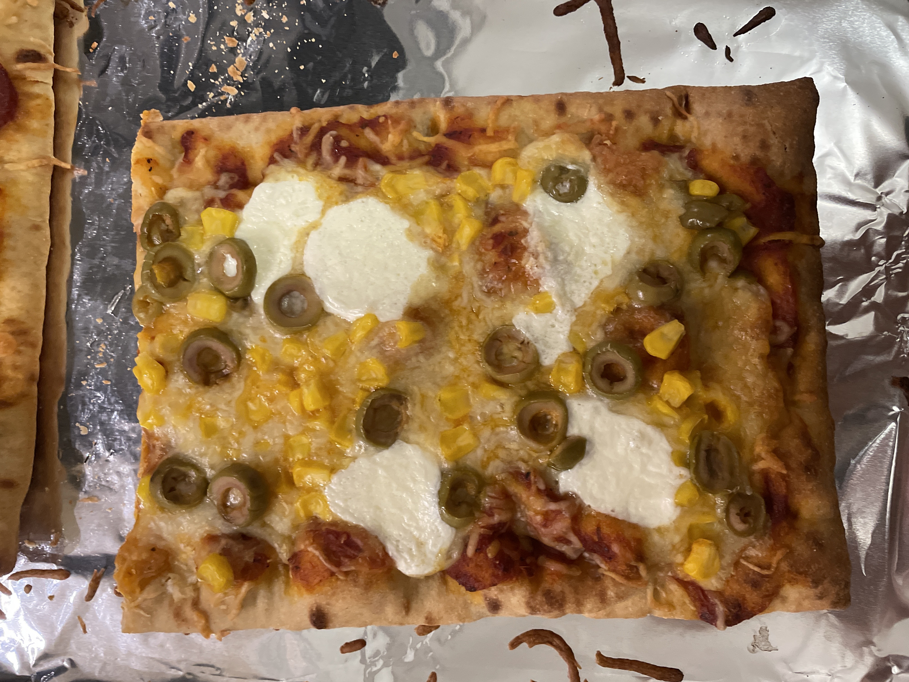

Homemade Pizza
This is my own creation, with help from my dad. This pizza is a great way to spend some time with friends or family, as the recipe is built to let as many people as you want, make their own.

Pieces of the Pie
- Premade Dough
- Ragu Homemade Style Pizza Sauce
- Sargento Six Cheese Italian Fine Cut Cheese
- BelGiorgio Mozzarella Cheese
- Any Toppings
- Baking Pan large enough to hold your dough
- Aluminum Foil
Assembling the Pie
- Preheat your oven to 350°F or 175°C.
- Spread Ragu Homemade Style Pizza Sauce on the dough evenly.
- Sprinkle some Sargento Six Cheese Italian Fine Cut Cheese onto the pizza.
- Add some BelGiorgio Mozzarella Cheese to the pizza, with at least 0.5in (1.3cm) spacing between the balls.
- Add any toppings you enjoy on a pizza
- Cover your baking pan with Aluminum Foil.
- Put your pie onto the aluminum foil covered baking pan.
- Put your pan and pie into the middlemost rack of your oven.
- Cook for 12 to 14 minutes or until the center is hot.
- Remove your pie from the oven and let it cool for one minute.